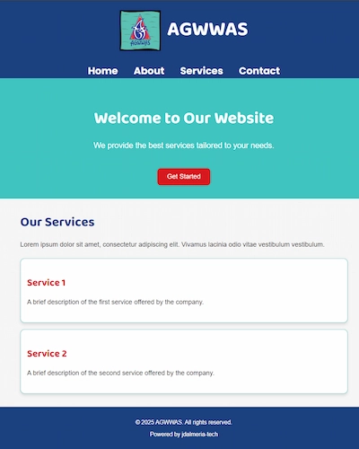

Site Name
AGWWAS
Alliance of Government Workers in the Water Sector, or AGWWAS. This name represents a sectoral labor organization of water district workers unions in the Philippines. Focuses on the welfare of the workers and the water districts they serve.
Optional domain availability: agwwas.org
Site Purpose
For the organization to have a platform to present and discuss their campaigns and advocacies which center on the perspective of the workers on water management, environment protection, quality public services, putting people over profit, among others.
Scenarios
- What are the current issues or challenges workers face in water management, and how can I get involved in advocating for solutions?
- How does privatization of water services affect the quality and accessibility of clean water for communities?
- How can I donate or collaborate with your organization to further your mission of putting people over profit?
Color Schema
Primary: #1B4080
Secondary: #40C4C0
Accent: #D71920
Neutral: #F5F5F5
Text: #333333
Text-light: #ffffff
Typography
For headings: Baloo Bhaijaan 2
For body: Roboto
For links: Poppins
Sample page with typography:
